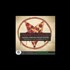

<!DOCTYPE html>
<html lang="en">
 <head>
<!-- Favicon -->
<link rel="shortcut icon" href="../../favicon.ico">
  <meta charset="utf-8"/>
  <title>
   The Higherside Chats: Marty Leeds on Pizzagate, symbolism &amp; secret societies
  </title>
  <meta content="Post on /v/Pizzagate archived on 2017-01-26 by ryanpeverly." name="description"/>
  <meta content="The Higherside Chats: Marty Leeds on Pizzagate, symbolism &amp; secret societies" property="og:title"/>
  <meta content="Post on /v/Pizzagate archived on 2017-01-26 by ryanpeverly." property="og:description"/>
  <link href="../../static/css/page.css" rel="stylesheet"/>
  <meta content="https://voat.pizzagate.hackliberty.org/thumbnails/5d/55/5d55a254-be16-4bef-8b82-5f2a29476aca.jpg" property="og:image"/>
  <meta content="https://voat.pizzagate.hackliberty.org/v/pizzagate/1594325.html" property="og:url"/>
  <meta content="width=device-width, initial-scale=1" name="viewport"/>
  <link href="https://voat.pizzagate.hackliberty.org/1594325.html" rel="canonical"/>
  <meta content="article" property="og:type"/>
  <meta content="Voat /v/Pizzagate Archive" property="og:site_name"/>
  <meta content="en_US" property="og:locale"/>
  <meta content="summary_large_image" name="twitter:card"/>
  <meta content="The Higherside Chats: Marty Leeds on Pizzagate, symbolism &amp; secret societies" name="twitter:title"/>
  <meta content="Post on /v/Pizzagate archived on 2017-01-26 by ryanpeverly." name="twitter:description"/>
  <meta content="https://voat.pizzagate.hackliberty.org/thumbnails/5d/55/5d55a254-be16-4bef-8b82-5f2a29476aca.jpg" name="twitter:image"/>
 </head>
</html>
<body class="dark">
 <header>
  <nav class="navbar navbar-dark bg-primary">
    <a class="navbar-brand" href="../../index.html">/v/Pizzagate Archive</a>
    <div class="navbar-collapse">
      <ul class="navbar-nav">
        <li class="nav-item">
          <a class="nav-link" href="../../date/page-1.html">Date</a>
        </li>
        <li class="nav-item">
          <a class="nav-link" href="../../comments/page-1.html">Comments</a>
        </li>
        <li class="nav-item">
          <a class="nav-link" href="../../search.html">Search</a>
        </li>
        <li class="nav-item dropdown">
          <a class="nav-link dropdown-toggle" href="#" id="navbarDropdown" role="button" 
             data-toggle="dropdown" aria-haspopup="true" aria-expanded="false">
            subreddits
          </a>
          <div class="dropdown-menu" aria-labelledby="navbarDropdown">
            <a class="dropdown-item" href="https://reddit.conspiracy.hackliberty.org">r/conspiracy</a>
            <a class="dropdown-item" href="https://reddit.pizzagate.hackliberty.org">r/pizzagate</a>
            <a class="dropdown-item" href="https://voat.conspiracy.hackliberty.org">v/conspiracy</a>
            <a class="dropdown-item" href="https://voat.pizzagate.hackliberty.org">v/pizzagate</a>
          </div>
        </li>
      </ul>
    </div>
  </nav>
</header>

 <div id="container">
  <!-- array (
  'submissionid' => 1594325,
  'creationDate' => '2017-01-26 13:33:17',
  'domain' => 'youtube.com',
  'formattedContent' => NULL,
  'isAdult' => 0,
  'isAnonymized' => 0,
  'subverse' => 'pizzagate',
  'thumbnail' => '5d55a254-be16-4bef-8b82-5f2a29476aca.jpg',
  'title' => 'The Higherside Chats: Marty Leeds on Pizzagate, symbolism & secret societies',
  'url' => 'https://www.youtube.com/watch?v=B5G1749AMh0',
  'userName' => 'ryanpeverly',
  'archivedLink' => NULL,
  'archivedDomain' => NULL,
  'isDeleted' => 0,
) --><div class="content" role="main">
   <div class="sitetable linklisting" id="siteTable">
    <div class="submission id-1594325 link type-text" id="submission-1594325">
     <a name="submissionTop">
     </a>
     <p class="parent">
     </p>
     <a class="thumbnail may-blank" href="https://www.youtube.com/watch?v=B5G1749AMh0" target="_self">
      
     </a>
     <div class="entry unvoted">
      <p class="title">
       <a class="title may-blank" href="https://www.youtube.com/watch?v=B5G1749AMh0" tabindex="1" target="_self" title="The Higherside Chats: Marty Leeds on Pizzagate, symbolism &amp; secret societies">
        The Higherside Chats: Marty Leeds on Pizzagate, symbolism &amp; secret societies
       </a>
       <span class="domain">
        (
        <a href="https://archive.searchvoat.co/search.php?d=youtube.com">
         youtube.com
        </a>
        )
       </span>
      </p>
      <p class="tagline">
       submitted
       <time datetime="2017-01-26T13:33:17+00:00" title="01/26/2017 1:33:17 PM">
        2017-01-26T13:33:17
       </time>
       by
       <span class="userattrs">
        <a class="author may-blank" href="https://archive.searchvoat.co/search.php?u=ryanpeverly">
         ryanpeverly
        </a>
       </span>
      </p>
      <ul class="flat-list buttons">
       <li class="first">
        <a class="comments may-blank" href="https://archive.searchvoat.co/v/pizzagate/1594325" rel="nofollow">
         1 comment
        </a>
       </li>
      </ul>
     </div>
     <div class="child">
     </div>
     <div class="clearleft">
     </div>
    </div>
    <div class="clearleft">
    </div>
   </div>
   <div class="horizontal-line">
   </div>
   <div class="commentarea">
    <div class="sitetable nestedlisting" id="siteTable">
     <div class="child id-7778538 comment even" style="">
      <div class="entry unvoted">
       <div class="noncollapsed" id="7778538" style=";">
        <p class="tagline">
         <a class="author may-blank" href="https://archive.searchvoat.co/search.php?u=AgainstTheNWO">
          AgainstTheNWO
         </a>
         <span class="userattrs">
         </span>
         <time datetime="2017-01-26T20:53:21+00:00" title="1/26/2017 8:53:21 PM">
          2017-01-26T20:53:21
         </time>
        </p>
        <div class="usertext-body may-blank-within" id="commentContent-7778538">
         <div class="md">
          <p>
           <p>
            Just listen on my podcast and check if already was posted. Glad it was, disappointed in number upvotes. His dislike at the ongoing shill calling inside the movement i fully recognize. The shill callers can do a lot of damage on non shills and the real shills most likely do not care. So are the shill callers doing it at purpose and are by that shills?
           </p>
          </p>
         </div>
        </div>
        <ul class="flat-list buttons">
         <li class="first">
          <a class="bylink" href="https://archive.searchvoat.co/v/pizzagate/1594325/7778538" rel="nofollow">
           link
          </a>
         </li>
        </ul>
       </div>
      </div>
     </div>
    </div>
   </div>
  </div>
 </div>
<!-- Footer Section -->
<footer class="container-fluid mt-3">
  <p class="small mb-0">
    /v/pizzagate archive has 40446 posts and 683312 total comments.
    <a href="https://git.hackliberty.org/c0mmando/voat-pizzagate-archive/">source code</a>.
  </p>
</footer>

<script src="../../static/js/jquery-3.7.1.slim.min.js"></script>
<script src="../../static/js/comments-toggle.js"></script>

</body>
